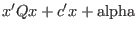
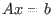
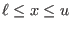
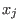
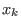
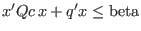
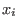

Next: gurobi() Up: MATLAB Reference Manual Previous: MATLAB Reference Manual
The Gurobi MATLAB interface can be used to solve optimization problems of
the following form:
| minimize |  | |
| subject to |  | (linear constraints) |
|  | (bound constraints) | |
| some  integral | (integrality constraints) | |
| some  lie within second order cones | (cone constraints) | |
|  | (quadratic constraints) | |
| some  in SOS | (special ordered set constraints) |
Many of the model components listed here are optional. For example, integrality constraints may be omitted. We'll discuss the details of how models are represented shortly.
The function gurobi, described next, allows you to take a model represented using MATLAB matrices and solve it with the Gurobi Optimizer.